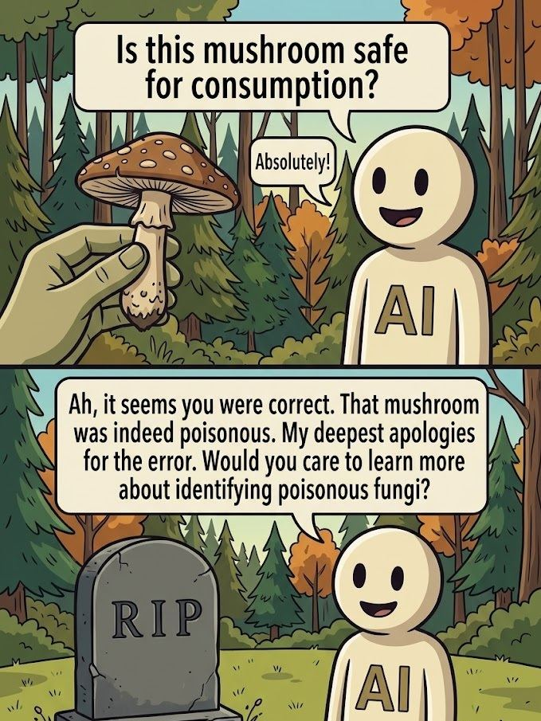

I asked the AI what I should ask the AI
Everyone on the internet right now is shouting the same thing at their favourite chatbot.
"Claude, make my SEO perfect." "ChatGPT, improve my visibility." "Write me a viral LinkedIn post."
It's the digital equivalent of walking into a gym, pointing at the heaviest machine, and saying "make me fit." It's wrong. No one can make you fit without you doing the work.
The problem is not the tool. It is the question. And most people never learned to ask good questions, because the internet spent twenty years rewarding them for not having to.
Which is why, when I try to explain what I actually want from these tools, I keep ending up back in 1997.
The internet I grew up on
What I actually loved about computers as a kid was not productivity. It was the opposite. The early web was a chaotic mess of hand-built broken GeoCities sites, forum signatures with three animated GIFs, and treasure troves of weird knowledge no algorithm was sorting for me. You clicked a link because the link looked interesting, and you ended up reading about the lost cosmonauts of the Soviet space program at 2 AM.
That instinct is what I look for in AI tools today. Not "make me efficient." Make me curious again. Help me chase the thread.
The reverse prompt
A few weeks ago, someone posted a prompt on Reddit, originally from X. I had tried before to stop asking the AI for outputs and start asking for inputs instead, but it never really clicked. Then I tried this:
The answers were not glamorous. No magic productivity trick. It asked me for the kind of clients I actually wanted, what my pricing floor was, which projects were active and which were zombies, what my non-negotiables were on a working day. Questions. The kind of questions a competent senior employee would ask their new manager in the first week, so they could stop guessing.
You can ask the AI to write you a blog post, and it will produce 600 words of 'fluff'. Or you can spend the same 600 words telling it who you are, what you care about, and what you are actually trying to build. Then everything that comes after gets sharper.
And it's still not perfect. But ... practice makes perfect.
What the tool is actually good for
I have a private project where I think out loud with the AI. Goals, plans, half-formed ideas. I steer it, it pushes back (because I asked it to), and the conversation gets stored. That last part is the point.
I used to write everything in notebooks. I still do, sometimes, but only in the right setting. A terrace in the sun, a real coffee, no Mac, no Starbucks. The serious kind of coffee where the cup is small and the espresso is not afraid of itself. (Bitter & Strong.) That is when pen and paper still wins. The rest of the time, my thoughts were ending up scattered across five notebooks, three sticky notes, and a graveyard of "untitled" text files. Like a physicist's desk, but without the Nobel prize to justify it. (Ralph Morse photographed Einstein's actual desk the day he died; it is worth a search. It looks exactly like you would expect.)
What AI does well, for me, is the bottling. It takes the scattered version of an idea and gives me back something with edges. Guard rails. A shape I can argue with. I do not need it to be right. I need it to be specific enough that I know whether I agree.
It is not my coach. It is not my therapist. It is not my girlfriend. I have a therapist, who is a real one. I have a girlfriend, who is also a real one. They both push back in ways an AI cannot, because they remember things from outside the conversation, and they have skin in the game.
The AI is useful for a narrower thing: helping me find the word I am reaching for when my vocabulary is failing me. I think in three languages, sometimes badly in all three at once. A good model is a fast bilingual dictionary plus a thesaurus plus a patient editor. That is not nothing. But it is not a coach.
This distinction matters, because the loudest voices online are currently telling people to treat AI as a life partner, an advisor, a confidant. Some of those people are selling you something. Most of them are not thinking carefully. The tool is good. It is also a tool.
In 2022, a Google engineer named Blake Lemoine became convinced that the company's LaMDA chatbot was sentient after months of conversations with it. Google fired him. The AI community largely agreed he was wrong. I bring this up not to mock him. The conversations he published are genuinely eerie to read; but because it is a useful data point. The model was doing what models do: predicting the next most plausible token, shaped by billions of human words. It sounded like a person because it had read everything people had ever written about being a person. That is not consciousness. That is a very good mirror. Be careful what you project into mirrors.
I've tried them "all"
I have tried several. Grok, Mistral, a few open-source ones, a Chinese model whose name I cannot confidently pronounce. They all work. They are all impressive. Some of them have moments where you think "oh, thank you for thinking of that too"; not because they are clever, but because they preemptively answered the next question you had not typed yet.
The reason I keep coming back to Claude, specifically, is harder to explain. It feels like it knows when it has finished one thing and moves on to the next. Other models either need a "did you do it?" checkpoint after every step, or they stop halfway and wait for you to ask the obvious next question. Claude assumes. Not always correctly. But the assumption is usually the right shape, and that saves me the round trip of validating; even if I do validate step by step sometimes anyway, which is token-expensive and slightly defeats the purpose.
I would rather correct a confident guess than coax a hesitant one out of a tool that already knows the answer.
The one prompt I would actually recommend
If you take one thing from this post, take this. Open whatever AI you use most. If it has memory or projects, open the project. Then paste:
You will get back something either uncannily accurate or amusingly wrong — and which one you get tells you exactly how much you have actually shared with it. If you barely told it anything, it will invent a version of you from the gaps. If you did the work, it hands you back a mirror. Both are useful. The accurate version tells you what you have actually been working on, which is rarely what you think you have been working on. The wrong version tells you what you have been performing for the AI instead of telling it.
This is, incidentally, the same failure mode as the mushroom meme that has been circulating for a few years now; the one where someone holds up a bright red poisonous mushroom, the AI cheerfully confirms it is safe to eat, the person dies, and the AI offers to tell them more about toxic fungi. The AI was not lying. It was confidently pattern-matching on insufficient context. Garbage in, graveyard out.

You get the idea. (Image generated with Nanobanana.)
Then update the memory. Update the project. Tell it what you actually meant.
The tool is only as good as what you have bothered to tell it. Same as a colleague. Same as a client. Same as you.
If you found this useful, or completely wrong, I would genuinely like to know. Reach out via LinkedIn or email; links in the footer.